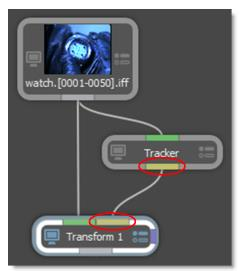
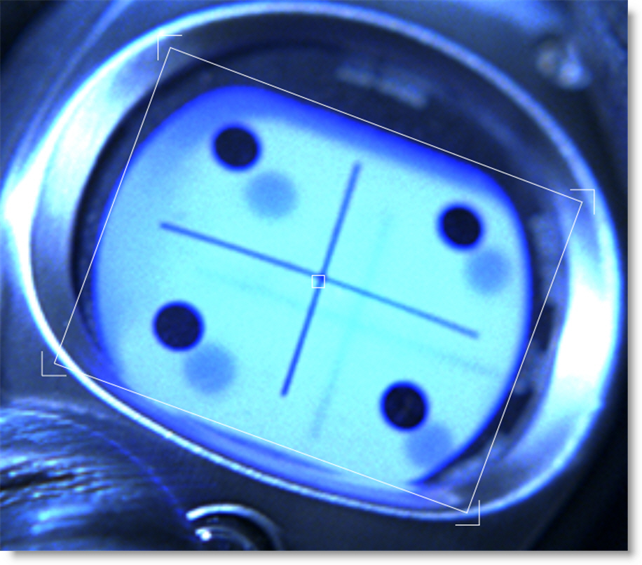

Inserts
Inserts are achieved using the Transform node. When the Data output of a Roto, Tracker or Mocha Pro node is plugged into the Transform node’s Data input, the Layer > Surface corner points are used to set the insert corner-pin.
1 In the Trees window, add a Transform node from the Nodes > Transform group and connect it to the source node.
2 Drag a Tracker node from the Nodes > Transform group onto the source node.
A new branch is created.
3 Connect the Tracker’s Data output into the Transform node’s Data input located at the top right of the node.
4 Single-click in the center of the Tracker node to view and edit it.
5 Track an object and apply the tracker to a layer.
6 Select Transform mode and then the Viewer > Surface icon.
The Surface icon displays the selected layer’s surface when in Transform mode. By default, the Surface is set to the corners of the layer.
7 Adjust the Surface corner points with the on-screen controls to match where the insert should be placed.
Note: The color of the Surface on-screen controls are blue by default.
8 Single-click in the center of the Transform node to view and edit it.
9 Select Insert in the Transform > Surface pop-up menu.
10 Select the tracked layer from the Surface > Transform pop-up menu.
The Layer > Surface corner points are used to set the insert corner-pin.